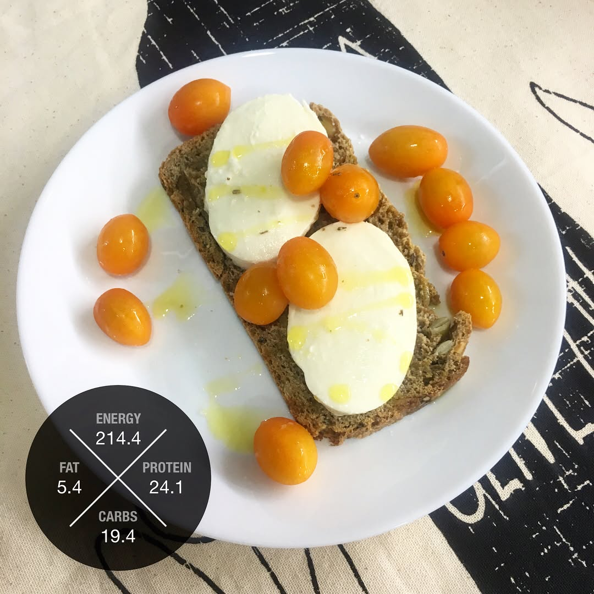

This morning was special, woke up to the smell of homemade wholemeal bread with sunflower, pumpkin and flax seeds ☺️ my new awesome addition to cooking tools - bread making machine was definitely the right purchase! Knowing what I'm eating and the how this food contributes to my nutrition makes me feel in control 😎. Want to really know what's on your plate? Download FoodBuddy app and start tracking your food 😉👍🏼 ----- #triathlon #ironmantri #healthyfood #sportnutrition #running #swimbikerun #dietfood #cervelo #orbea #specializedbikes #giantbikes #canyonbikes #bmcbikes #boardmanbikes #ironmantraining #marathontraining #marathon #trailrun #powerbreakfast #homemadebread
2017-07-18 19:06:42
Back to main page